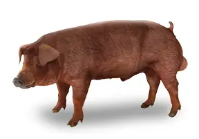
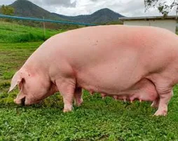
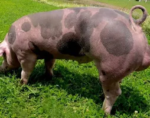
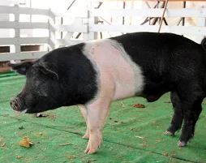

Duroc
Conocido por su rápido crecimiento y carne magra.
Excelente para la producción de jamón.
Conocido por su rápido crecimiento y carne magra.
Excelente para la producción de jamón.
$150 USD

Landrace
De cuerpo largo y alta prolificidad.
Ideal para la producción de tocino.
De cuerpo largo y alta prolificidad.
Ideal para la producción de tocino.
$180 USD

Pietrain
Musculoso y con alto rendimiento de carne magra.
Popular en la producción de carne de cerdo de calidad.
Musculoso y con alto rendimiento de carne magra.
Popular en la producción de carne de cerdo de calidad.
$160 USD

Hampshire
Magro y musculoso, con una característica banda blanca.
Buen crecimiento y calidad de carne.
Magro y musculoso, con una característica banda blanca.
Buen crecimiento y calidad de carne.
$170 USD

Berkshire
Conocido por su carne oscura, jugosa y sabrosa.
Considerado una raza premium.
Conocido por su carne oscura, jugosa y sabrosa.
Considerado una raza premium.
$200 USD